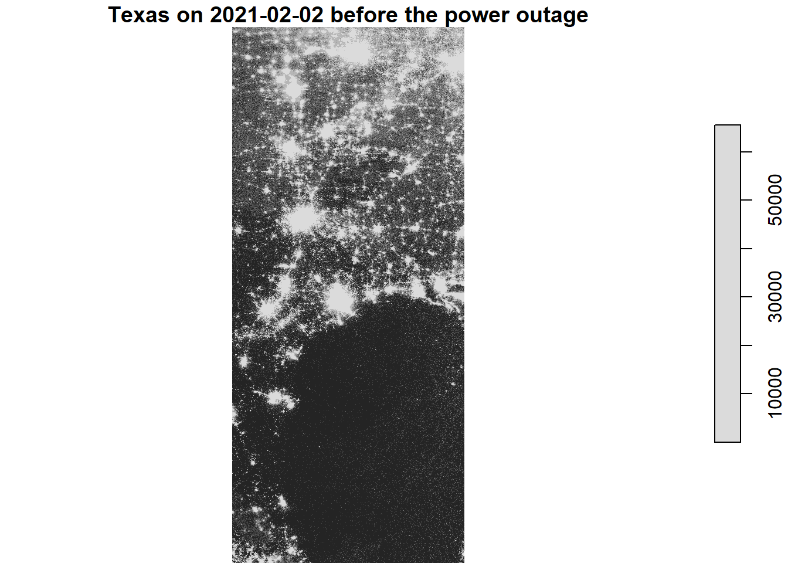
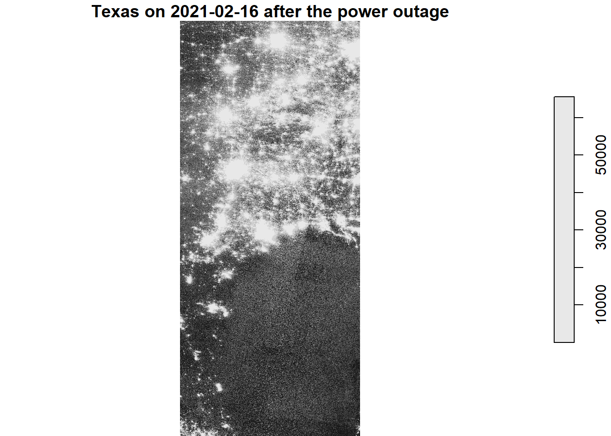
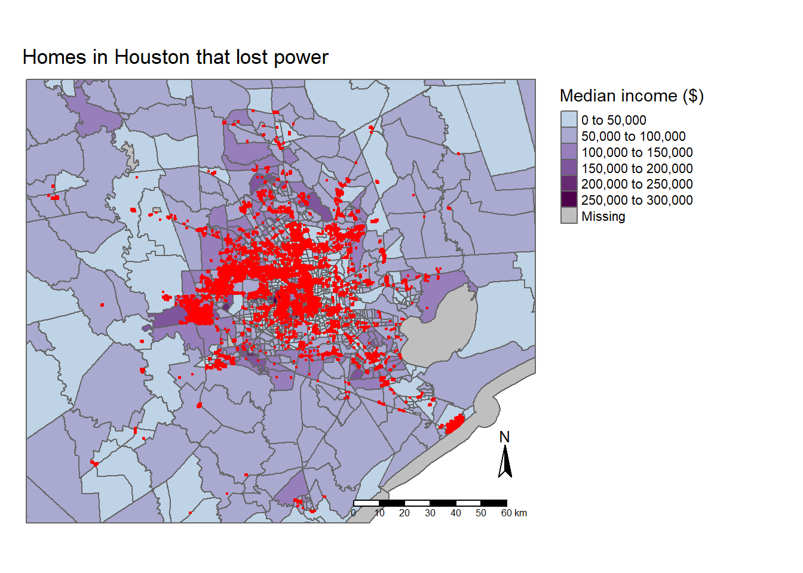
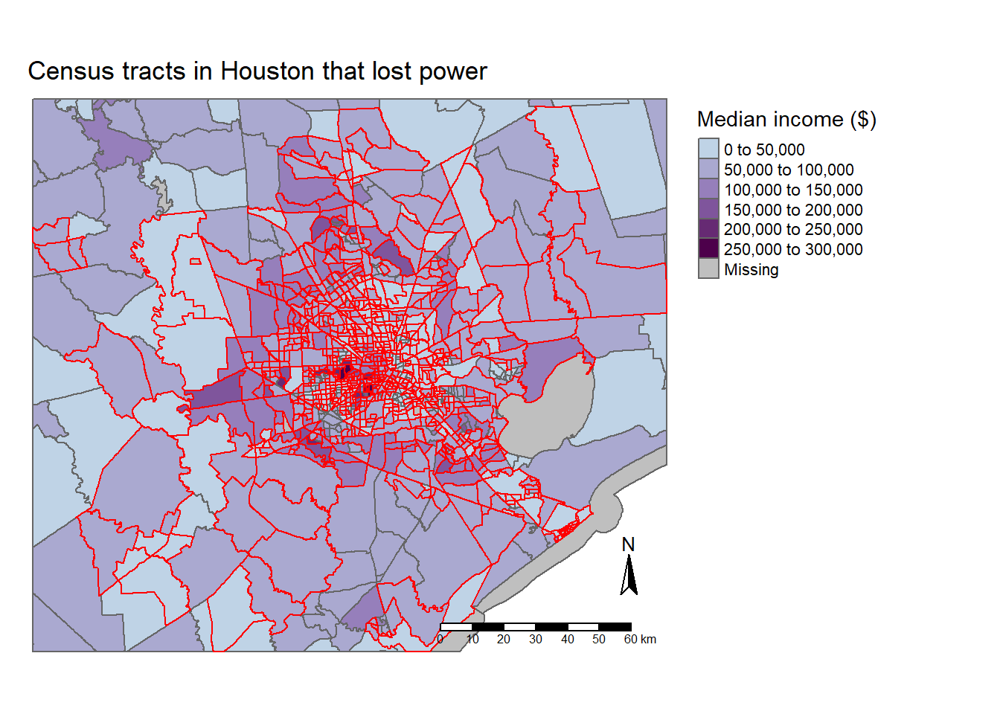
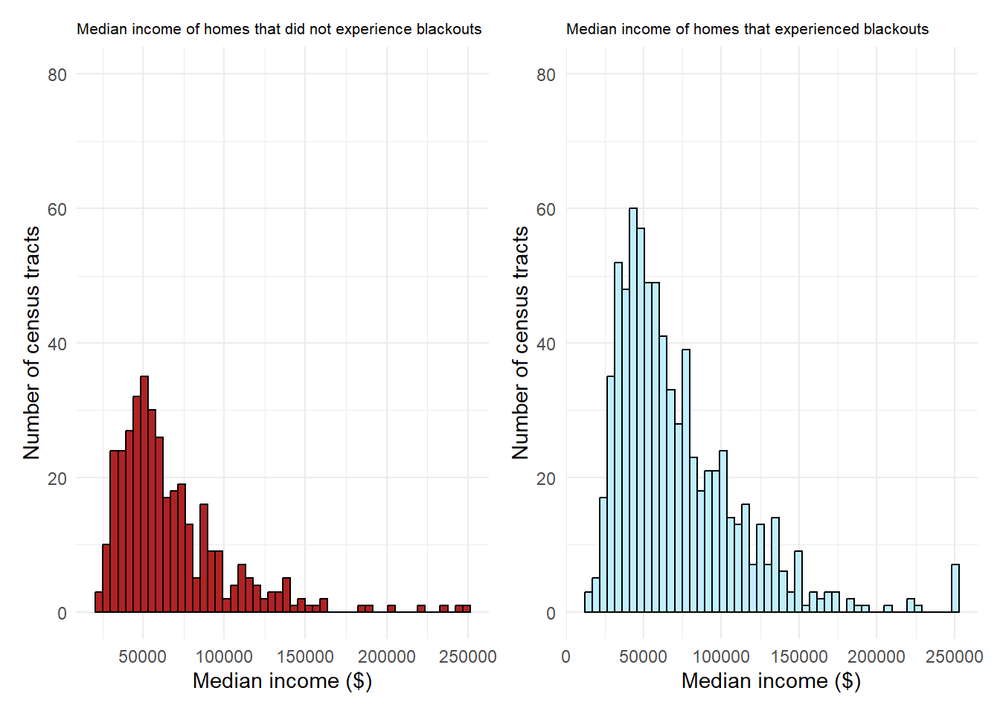

library(sf)
library(tidyverse)
library(tmap)
library(here)
library(stars)
library(raster)
library(patchwork)Homework 3
Identifying the impacts of extreme weather
Background
In February 2021, three severe winter storms transversed the United States. During the course of this time, the state of Texas experienced a major power crisis. The goal of this assignment is to identify the impacts of these winter storms by estimating the number of homes in the Houston area that experienced power blackouts. We will also investigate whether or not these blackouts were experienced disproportionally throughout income groups.
Load libraries
Load data
# Texas roads data from Geofabrik
roads <- read_sf(here("data", "gis_osm_roads_free_1.gpkg", "gis_osm_roads_free_1.gpkg"),
query = "SELECT * FROM gis_osm_roads_free_1 WHERE fclass='motorway'")
# Buildings data from OpenStreetMap
buildings <- read_sf(here("data", "gis_osm_buildings_a_free_1.gpkg", "gis_osm_buildings_a_free_1.gpkg"),
query = "SELECT *
FROM gis_osm_buildings_a_free_1
WHERE (type IS NULL AND name IS NULL)
OR type in ('residential', 'apartments', 'house', 'static_caravan', 'detached')")
# Texas socioeconomic data from the US Census Bureau
socio <- st_read(here("data", "ACS_2019_5YR_TRACT_48_TEXAS.gdb"), layer = "ACS_2019_5YR_TRACT_48_TEXAS")
# Texas median income data from US Census Bureau
median_income <- st_read(here("data", "ACS_2019_5YR_TRACT_48_TEXAS.gdb"), layer = "X19_INCOME") %>%
dplyr::select(B19013e1, GEOID) %>%
rename("median_income" = "B19013e1",
"GEOID_Data" = "GEOID")
# Night lights data from NASA's Worldview
nights5_7 <- read_stars(here("data", "VNP46A1", "VNP46A1.A2021038.h08v05.001.2021039064328.tif"))
nights6_7 <- read_stars(here("data", "VNP46A1", "VNP46A1.A2021038.h08v06.001.2021039064329.tif"))
nights5_16 <- read_stars(here("data", "VNP46A1", "VNP46A1.A2021047.h08v05.001.2021048091106.tif"))
nights6_16 <- read_stars(here("data", "VNP46A1", "VNP46A1.A2021047.h08v06.001.2021048091105.tif"))Check CRS
When working with spatial data, it is important to check that your CRS’s are the same.
Show the code
check_df_crs <- function() {
df_crs_comparisons <- list( # Create a named list with comparisons
"roads vs buildings" = st_crs(roads) == st_crs(buildings),
"roads vs socio" = st_crs(roads) == st_crs(socio),
"buildings vs socio" = st_crs(buildings) == st_crs(socio),
"nightlight5_7 vs nightlight6_7" = st_crs(nights5_7) == st_crs(nights6_7),
"nightlight5_7 vs nightlight5_16" = st_crs(nights5_7) == st_crs(nights5_16),
"nightlight5_7 vs nightlight6_16" = st_crs(nights5_7) == st_crs(nights6_16)
)
# Identify results that are FALSE by comparison name
false_comparisons <- names(df_crs_comparisons)[!unlist(df_crs_comparisons)]
if (length(false_comparisons) == 0) {
print("All CRS match. ")
} else {
warning(paste(paste(false_comparisons, "CRS projections do not match.", collapse = " ")))
}
}
# Call warning function
check_df_crs()Warning in check_df_crs(): roads vs socio CRS projections do not match.
buildings vs socio CRS projections do not match.From the warning message, it looks like the socio data is the only variable that has a different CRS. Change it to any of the other variables to match the rest. Then, recheck if the CRSs match.
# Transform socio crs to be the same as roads
socio <- st_transform(socio, crs = st_crs(roads))
if (st_crs(socio) == st_crs(roads)) {
print("All CRSs are now matching")
} else {
warning("CRSs are still not all matching")
}[1] "All CRSs are now matching"Night light intensities before and after the storm
The purpose of this assignment is to check how the storms affected night light intensities. To get a sense of how it looks, we first want to see the night light intensity before and after the storm.
# Combine data for night light intensities on 2021-02-07 and 2021-02-16 respectively
nights_merge_7 <- st_mosaic(nights5_7, nights6_7)
nights_merge_16 <- st_mosaic(nights5_16, nights6_16)Show the code
# Map before the storm
lights7 <- plot(nights_merge_7,
main = "Texas on 2021-02-02 before the power outage")
Show the code
# Map After the storm
lights16 <- plot(nights_merge_16,
main = "Texas on 2021-02-16 after the power outage")
Create blackout mask
We want to discover the areas that experienced a blackout due to the storm. To do this, we need to create a mask that indicates for each cell whether or not it experienced a blackout.
# Change in light intensity before and after the storms
nights_diff <- nights_merge_7 - nights_merge_16
# Areas that experienced a drop of less than 200 nWCm-2sr-1 did not experience a blackout,
# therefore can NA in our blackout mask
nights_diff[nights_diff < 200] <- NA
# Vectorize data and fix invalid geometries
nights_diff_vect <- st_as_sf(nights_diff) %>%
st_make_valid()
# Create a bbox that represents Houston
houston<- st_bbox(c(xmin = -96.5, xmax = -94.5, ymax = 30.5, ymin = 29), crs = "EPSG:4326")
# Crop ourly newly created vector to only Houston
nights_crop <- st_crop(nights_diff_vect, houston)
# Reproject to a Texas CRS of EPSG:3083
nights_crop_trans <- st_transform(nights_crop, crs = "EPSG:3083")Exclude highways from the cropped blackout mask
Highways may have experienced changes in their light intensities that are not related to the storm. We should exclude any locations within 200 meters of all highways in the Houston area.
First, lets check to see if our CRSs are the same for the data being compared. We are changing our CRSs from the commonly used EPSG:4326 to a Texas specific CRS of EPSG:3083.
Show the code
# Check if crs are the same
if (st_crs(roads) == st_crs(nights_crop_trans)){
print("CRSs are the same")
} else {
warning("CRSs are not the same")
# Reproject roads so it has the same CRS
roads <- st_transform(roads, crs = st_crs(nights_crop_trans))
print("CRSs are NOW the same")
}Warning: CRSs are not the same[1] "CRSs are NOW the same"# Create a 200m buffer in roads data
roads_200m <- st_buffer(roads, dist = 200)
# Unionize roads_200 data
roads_200_union <- st_union(roads_200m) #%>%
# st_make_valid() %>%
# st_as_sf()
# Use st_difference() to get rid of lights data within 200m of roads
nights_diff_roads <- st_difference(nights_crop_trans, roads_200_union)Identify homes likely impacted by blackouts
Like before, check to see if the CRSs match. If they don’t, reproject to the Texas CRS.
Show the code
# Check if CRSs are the same
if (st_crs(buildings) == st_crs(nights_diff_roads)){
print("CRSs are the same")
} else {
warning("CRSs are not the same")
buildings <- st_transform(buildings, crs = st_crs(nights_diff_roads))
print("CRSs are NOW the same")
}Warning: CRSs are not the same[1] "CRSs are NOW the same"# Find where homes are crossing with power outage in the blackout mask
houses_blackouts <- buildings[nights_diff_roads, , op = st_intersects]
# Estimate of the number of homes in Houston that lost power
print(paste("The number of homes in Houston that lost power were", length(houses_blackouts$type)))[1] "The number of homes in Houston that lost power were 157969"Identify the census tracts likely impacted by blackout
# Join median_income data to socio data by GEO_ID
census_income <- left_join(socio, median_income, by = "GEOID_Data")We left join median income onto our socio data because we are only interested in the income data for our houston census tracts.
Once again, check to see if the CRSs match.
Show the code
# Check CRSs match
if (st_crs(houses_blackouts) == st_crs(census_income)) {
print("CRSs are the same")
} else {
warning("CRSs are not the same")
census_income <- st_transform(census_income, crs = st_crs(houses_blackouts))
print("CRSs are NOW the same")
}Warning: CRSs are not the same[1] "CRSs are NOW the same"# Join houses_blackout data with census_income
blackout_census <- st_join(houses_blackouts,
census_income,
left = TRUE)
# Reproject Houston polygon from earlier
houston_3083 <- st_transform(houston, crs = "EPSG:3083")
# Crop census_income data to Houston
houston_census <- st_crop(census_income, houston_3083)
# Subset the houston census data with our blackout data
census_homes_cropped <- houston_census[blackout_census, ] Map of homes in Houston that lost power
Show the code
tm_shape(houston_census) +
tm_polygons(col = "median_income",
palette = c("#BFD3E6", "#8C6BB1", "#4D004B"),
title = "Median income ($)") +
tm_shape(houses_blackouts) +
tm_dots(col = "red") +
tm_layout(legend.outside = TRUE,
main.title = "Homes in Houston that lost power",
main.title.size = 1.1,
frame = FALSE) +
tm_scale_bar(position = c(0.63, 0.02),
size = 0.5) +
tm_compass(position = c(0.875, 0.12),
size = 1.75)
Map of census tracts that lost power
Show the code
tm_shape(houston_census) +
tm_polygons(col = "median_income",
palette = c("#BFD3E6", "#8C6BB1", "#4D004B"),
title = "Median income ($)") +
tm_shape(census_homes_cropped) +
tm_borders(col = "red") +
tm_layout(legend.outside = TRUE,
main.title = "Census tracts in Houston that lost power",
main.title.size = 1.1,
frame = FALSE) +
tm_scale_bar(position = c(0.63, 0.02),
size = 0.5) +
tm_compass(position = c(0.875, 0.12),
size = 1.75) 
Histogram of census tracks that did and did not lose power
Show the code
# Create a histogram of census tracts that experienced blackouts
yes_blackout_census <- census_homes_cropped %>%
st_drop_geometry() %>%
ggplot(aes(x = median_income)) +
geom_histogram(bins = 50,
color = "black",
fill = "lightblue1") +
labs(title = "Median income of homes that experienced blackouts",
x = "Median income ($)",
y = "Number of census tracts") +
theme_minimal() +
theme(plot.title = element_text(size = 8)) +
ylim(0, 80)
# Filter data to find those that did not experience blackouts
no_blackout_census <- houston_census %>%
filter(!GEOID_Data %in% unique(blackout_census$GEOID_Data))
# Create a histogram from this
no_blackout_census_plot <- no_blackout_census %>%
st_drop_geometry() %>%
ggplot(aes(x = median_income)) +
geom_histogram(bins = 50,
color = "black",
fill = "firebrick") +
labs(title = "Median income of homes that did not experience blackouts",
x = "Median income ($)",
y = "Number of census tracts") +
theme_minimal() +
theme(plot.title = element_text(size = 8)) +
ylim(0, 80)
no_blackout_census_plot + yes_blackout_census
Reflection
The storms in February of 2021 had huge impacts in the state of Texas. Over a hundred thousand homes experienced a blackout with over 700 census tracts as well. The maps presented show the areas of homes and census tracts that experienced blackouts. From our analysis, we see that blackouts were not felt disproportionately throughout income groups because there was a similar trend for groups that did and did not experience blackouts. A limitation to the data was that we could only acquire satellite data from before and after the storms due to cloud coverage. We might be able to come to more accurate conclusions if we could see what was happening during each storm.
Citations
Reveal code
tribble(
~Data, ~Citation, ~Link,
"Night light data from Level-1 and Atmospheric Archive & Distribution System Distributed Active Archive Center (LAADS DAAC)", "Menzel, W.P., Frey, R.A., and Baum, B.A. (2015). Terra/MODIS Cloud Product 5-Min L2 Swath 1 km and 5 km, C6, NASA Level-1 and Atmosphere Archive & Distribution System (LAADS) Distributed Active Archive Center (DAAC), Goddard Space Flight Center, Greenbelt, MD. [http://dx.doi.org/10.5067/MODIS/MOD06_L2.006]", "[LAADS DAAC](https://ladsweb.modaps.eosdis.nasa.gov/)",
"Open Street Map (OSM) Buildings and Roads data", "OpenStreetMap contributors. (2015) Planet dump North America. Retrieved from https://planet.openstreetmap.or", "[OSM](https://planet.openstreetmap.org/)",
"Socioeconomic data from the American Community Survey", "U.S. Census Bureau. (2019). 2019 American Community Survey Public Use Microdata Samples. Retrieved from https://factfinder.census.gov/faces/nav/jsf/pages/searchresults.xhtml?refresh=t", "[ACS](https://www.census.gov/programs-surveys/acs/data.html)"
) %>%
kableExtra::kable()| Data | Citation | Link |
|---|---|---|
| Night light data from Level-1 and Atmospheric Archive & Distribution System Distributed Active Archive Center (LAADS DAAC) | Menzel, W.P., Frey, R.A., and Baum, B.A. (2015). Terra/MODIS Cloud Product 5-Min L2 Swath 1 km and 5 km, C6, NASA Level-1 and Atmosphere Archive & Distribution System (LAADS) Distributed Active Archive Center (DAAC), Goddard Space Flight Center, Greenbelt, MD. [http://dx.doi.org/10.5067/MODIS/MOD06_L2.006] | LAADS DAAC |
| Open Street Map (OSM) Buildings and Roads data | OpenStreetMap contributors. (2015) Planet dump North America. Retrieved from https://planet.openstreetmap.or | OSM |
| Socioeconomic data from the American Community Survey | U.S. Census Bureau. (2019). 2019 American Community Survey Public Use Microdata Samples. Retrieved from https://factfinder.census.gov/faces/nav/jsf/pages/searchresults.xhtml?refresh=t | ACS |